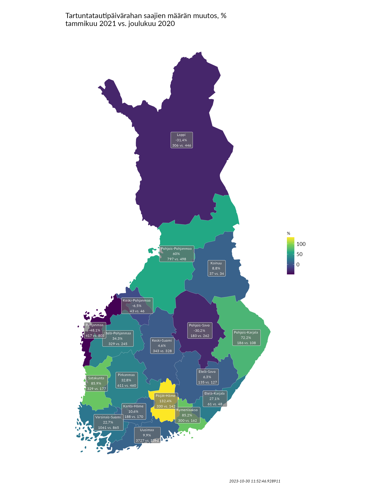

| Etuuksien saajat tammikuussa 2021 | |||||
| saajat | ero vuodentakaiseen (tammikuu 2020) | ero viime kuuhun (joulukuu 2020) | |||
|---|---|---|---|---|---|
| ero (%) | ero (kpl) | ero (%) | ero (kpl) | ||
| Työttömyysturva (kaikki saajat) | 240910 | +15,2 | +31730 | -0,2 | -394 |
| Työttömyysturva (uudet saajat) | 6545 | -19,3 | -1569 | +20,1 | +1097 |
| Työttömyysturva (aiemmin tukea saaneet) | 211990 | +5,4 | +10924 | -0,9 | -1844 |
| Yrittäjien työmarkkinatuki | 22375 | — | +22375 | +1,6 | +353 |
| Yleinen asumistuki (kaikki saajaruokakunnat) | 402280 | +7,4 | +27861 | -0,1 | -279 |
| Yleinen asumistuki (uudet saajaruokakunnat) | 7426 | +15,3 | +986 | -2,7 | -203 |
| Yleinen asumistuki (aiemmin tukea saaneet ruokakunnat) | 394854 | +7,3 | +26875 | 0 | -76 |
| Perustoimeentulotuki (kaikki saajat) | 210468 | -0,4 | -895 | -2,2 | -4721 |
| Perustoimeentulotuki (uudet saajat) | 7982 | -32,1 | -3777 | -13,1 | -1201 |
| Perustoimeentulotuki (aiemmin tukea saaneet) | 202486 | +1,4 | +2882 | -1,7 | -3520 |
| Perustoimeentulotuki (kaikki saajakotitaloudet) | 140444 | +2,1 | +2887 | -2,4 | -3461 |
| Perustoimeentulotuki (uudet saajakotitaloudet) | 6424 | -21,5 | -1755 | -10,4 | -743 |
| Perustoimeentulotuki (aiemmin tukea saaneet kotitaloudet) | 134020 | +3,6 | +4642 | -2 | -2718 |
| Sairauspäiväraha (kaikki saajat) | 51747 | -10,9 | -6323 | -8,5 | -4813 |
| Tartuntatautipäiväraha (kaikki saajat) | 9574 | +79683,3 | +9562 | +13,9 | +1170 |
Etuuksien saajat tammikuussa 2021
kuukausikatsaus
Työttömyysturvan saajien määrä pysyi vuoden vaihtuessa lähes ennallaan. Tukea sai tammikuussa 32 000 henkilöä enemmän kuin vuotta aiemmin. Heistä 22 000 oli yrittäjien työmarkkinatuen saajia.
Perustoimeentulotukea saaneiden kotitalouksien ja henkilöiden määrä laski kahdella prosentilla vuoden vaihtuessa. Saajia oli 895 henkilöä vähemmän kuin vuoden 2019 tammikuussa, mutta kotitalouksia 2 900 enemmän. Saajien joukossa on siis enemmän yhden hengen kotitaloudessa asuvia ja vähemmän useamman hengen kotitaloudessa asuvia kuin vuotta aiemmin.
Työttömyysturvan saajien määrä pysyi vuoden vaihtuessa lähes ennallaan. Tukea sai tammikuussa 32 000 henkilöä enemmän kuin vuotta aiemmin. Heistä 22 000 oli yrittäjien työmarkkinatuen saajia.
Perustoimeentulotukea saaneiden kotitalouksien ja henkilöiden määrä laski kahdella prosentilla vuoden vaihtuessa. Saajia oli 895 henkilöä vähemmän kuin vuoden 2019 tammikuussa, mutta kotitalouksia 2 900 enemmän. Saajina on siis enemmän yhden hengen kotitalouksia ja vähemmän useamman hengen kotitalouksia kuin vuotta aiemmin.
Yleistä asumistukea saavien ruokakuntien määrä pysyi ennallaan noin 402 000 ruokakunnassa. Tukea sai tammikuussa 28 000 ruokakuntaa enemmän kuin vuotta aiemmin.
Sairauspäivärahan saajien määrä laski selvästi joulukuusta ja oli myös selvästi edellisvuoden tammikuuta pienempi.
Tartuntatautipäivärahan saajien määrä sen sijaan jatkoi kasvuaan ja sitä maksettiin joulukuussa jo yli 9 500 henkilölle. Tartuntatautipäivärahaa on haettu runsaasti myös helmikuussa. Kahden ensimmäisen viikon aikana saapui yli 7 000 hakemusta (ks. tarkemmin Kelan etuushakemukset-sivu).
Saajat maakunnittain
Työttömyysturvan saajien määrä kasvoi joulukuusta yli prosentilla Kainuussa (+1,7 %) ja Keski-Pohjanmaalla (+1,4 %). Muissa maakunnissa saajien määrä kasvoi tai laski alle prosentin. Uudellamaalla työttömyysturvan saajia oli 27 prosenttia ja Lapissa ja Etelä-Pohjanmaalla 19 prosenttia enemmän kuin edellisvuoden tammikuussa. Kainuussa työttömyysturvan saajien määrä on samalla tasolla kuin vuosi sitten. Muissa maakunnissa ero edellisvuoteen oli tammikuussa 1–15 prosenttia.
Pohjois-Pohjanmaalla ja Kainuussa oli tammikuussa noin 6 prosenttia enemmän yrittäjien työmarkkinatuen saajia kuin joulukuussa. Pirkanmaalla kasvua oli 5 prosenttia ja Pohjois-Karjalassa 4 prosenttia. Muissa maakunnissa muutokset olivat pienempiä.
Perustoimeentulotukea saaneiden kotitalouksien määrä laski kaikissa maakunnissa. Suurinta (-7,7 %) lasku oli Pohjanmaalla, Pohjois-Karjalassa (-4,9 %) ja Etelä-Savossa (-4,8 %). Verrattuna edellisvuoden tammikuuhun tukea saavia kotitalouksia oli Uudellamaalla 6 prosenttia enemmän, Keski-Suomessa ja Päijät-Hämeessä 2 prosenttia enemmän ja Pohjois-Karjalassa 4 prosenttia vähemmän. Muissa maakunnissa ero edellisvuoteen oli pienempi.
Yleisen asumistukea saaneiden ruokakuntien määrässä tapahtui korkeintaan 2 prosentin kasvua tai laskua edelliskuusta. Etelä-Savossa ja Kymenlaaksossa saajaruokakuntia oli kuta kuinkin saman verran kuin vuotta aiemmin. Uudellamaalla (+11,4 %), Pirkanmaalla (+8,1 %), Etelä-Pohjanmaalla (+7,3 %), Kanta-Hämeessä (+7,1 %) ja Varsinais-Suomessa (+7,1 %) oli suurin ero viime vuoden saajamääriin.
Sairauspäivärahan saajien määrä laski selvästi useimmissa maakunnissa. Ainoastaan Varsinais-Suomessa (+4 %) ja Pohjanmaalla (+0,7 %) saajia oli joulukuuta enemmän. Myös Kanta-Hämeessä, Satakunnassa ja Etelä-Pohjanmaalla lasku oli alle prosentin. Kaikissa maakunnissa saajia oli vähemmän kuin edellisvuoden tammikuussa.
Tartuntatautipäivärahan saajien määrä laski joulukuusta Pohjanmaalla, Lapissa, Pohjois-Savossa ja Keski-Suomessa ja kasvoi kaikkialla muualla. Päijät-Hämeessä saajien määrä yli kaksinkertaistui joulukuusta. Alla olevassa karttakuvassa on esitetty tartuntatautipäivärahan saajien määrän muutos joulukuusta 2020 tammikuuhun 2021. Tartuntatautipäivärahan saajien määrä ei suoraan kuvaa epidemian etenemistä (ks. tarkemmin Aineiston ja mittarien kuvaus), mutta saajamäärien kehityksessä on kuitenkin havaittavissa selvää tartunta- ja altistumisryppäisiin liittyvää alueellista vaihtelua.

Saajat ikäluokittain
Työttömyysturvan saajien määrä kasvoi nuorimmassa ikäryhmässä joulukuusta 4 prosentilla. Muissa ikäryhmissä muutokset olivat alle prosentin luokkaa. Edellisvuoden tammikuuhun verrattuna saajien määrä oli kasvanut eniten yli 54-vuotiaiden ikäryhmässä, jossa saajia oli 45 prosenttia (eli 15 700 saajaa) enemmän. 35–54-vuotiaita saajia oli noin 27 prosenttia enemmän, 25–34-vuotiaita saajia 18 prosenttia ja alle 25-vuotiaita saajia 14 prosenttia enemmän kuin edellivuoden tammikuussa.
Yrittäjien työmarkkinatuen saajien määrä kasvoi joulukuusta hieman kaikissa ikäryhmissä.
Perustoimeentulotuen saajien määrä laski joulukuusta kaikissa ikäryhmissä 2–3 prosentilla. Alle 25-vuotiaita ja 45–54-vuotiaita tuen saajia oli pari prosenttia edellisvuoden tammikuuta vähemmän ja muita ikäryhmiä hieman enemmän.
Sairauspäivärahan saajien määrä laski edelliskuusta selvästi kaikissa ikäryhmissä. Kaikissa ikäryhmissä saajia oli myös vähintään 5 prosenttia edellisvuoden tammikuuta vähemmän.
Alle 25-vuotiaiden tartuntatautipäivärahan saajien määrä laski 8 prosentilla joulukuusta, kun taas muissa ikäryhmissä oli selvää kasvua. Eniten kasvoi yli 54-vuotiaiden tartuntatautipäivärahan saajien määrä (+27,4 %).